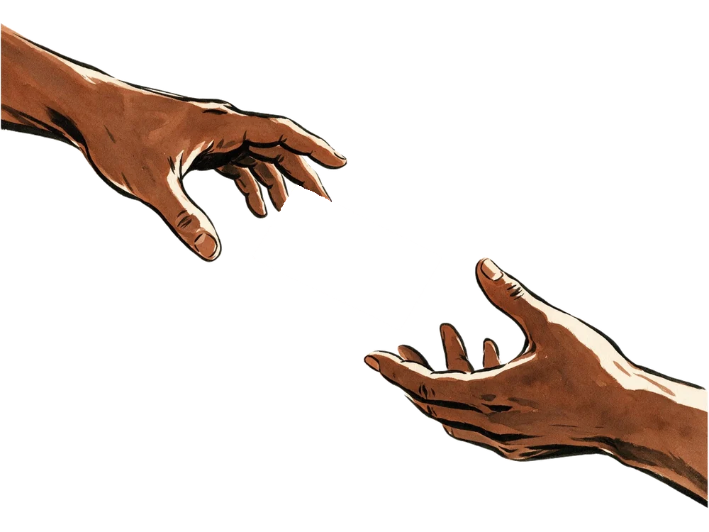
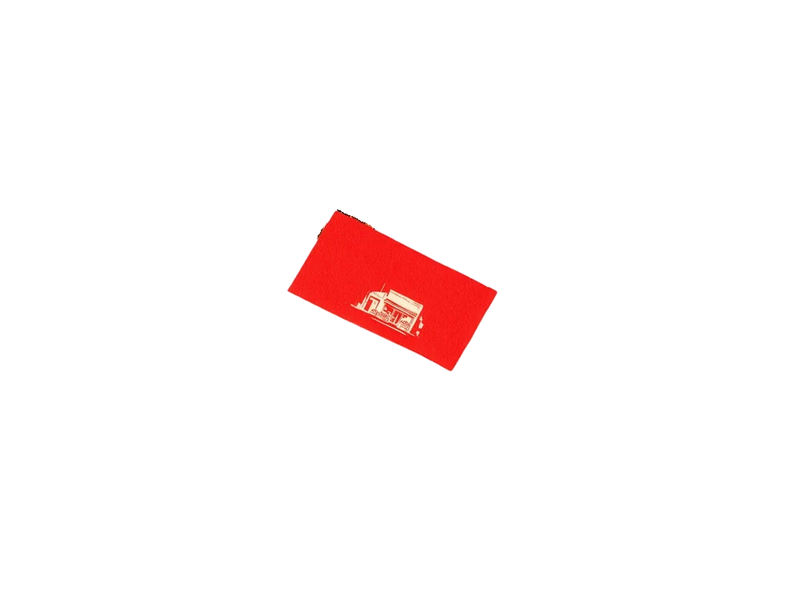
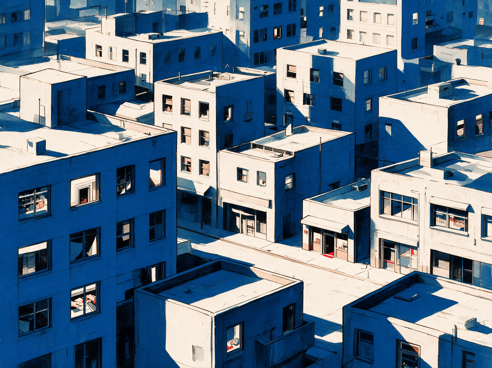

01
Content &
campaigns


Give people a reason to notice — and act.
- Content planning
- Photography
- Short-form video
- Campaign creative
- Launch content
- Creator coordination


Independent creative & growth practice
We make content, campaigns, brands, and websites that help businesses get noticed — and make it easier for people to inquire, order, or book.
01 — Attention

02 / The argument
More content isn’t the whole answer.
The interesting part is usually already there. We find it, build the story around it, and give people a reason to act.
The role STIR leads LABAY’s creative direction and digital channels, produces short-form content, manages its website and e-commerce work, and handles wholesale account relationships.
5M
Organic views
Excluding creator collaborations.
10M+ including creator collaborations, across the same nine-month period. No paid ads.
The work connects what people see online with what happens at the market.
Creator collaborations
Videos featuring LABAY.
Kemoy Martin
Nicolas Nuvan
MarcosWorldNyc
Eating With Experts
Melissa Rose Cooper
STIR’s work also extends to event production and wholesale coordination for LABAY.
Events
LABAY’s fruit stand at a Nike Tennis block party produced by Kindred.
STIR Developed the menu and concept, coordinated staffing, and ran LABAY’s stand on the day.
A community basketball event outside LABAY on Nostrand Avenue.
STIR Coordinated LABAY’s participation and the street-closure arrangements.
LABAY’s participation in a Caribbean Heritage Month celebration at South Brooklyn Health.
STIR Produced and managed LABAY’s participation.
LABAY’s wholesale customers
LABAY supplies produce to Kabawa and Café Charmant.
STIR Manages LABAY’s relationships with Kabawa and Café Charmant, serving as the point of contact for both accounts. The work includes all account communication, invoicing and payments, and delivery coordination with our staff.
The New Yorker , opens in a new tab describes Kabawa’s sourcing relationship with LABAY.
Press
Selected coverage of the market.
04 / Selected websites
A storage business, a drain service, and a church. Each website needed to make the next step clear: request a quote, call for help, or plan a visit.
01
A website that explains storage options and helps prospective customers request a quote.
STIR Build + ongoing management
02
A website that makes drain and sewer services easy to understand, with a clear route to call for help.
STIR Build + ongoing management
03
A website that helps visitors learn about the church and plan a visit.
STIR Build
Shown the way most people arrive at them — on a phone.
05 / Services
Bring us a specific project, or work with us on an ongoing basis.
01


Give people a reason to notice — and act.
02

Make the business clear, recognizable, and easy to buy from.
03

Keep the content and website working together, month after month.
06 / How we work
We agree on the priorities, make the work, and keep improving what needs ongoing attention.
We look at the product, the people, and how the business works. Then we agree on what needs to be communicated and what the work should help people do.
We create the content, identity, or website around that brief, with a clear scope and points for your input.
For ongoing work, we manage the agreed channels and updates, review the response, and use inquiries and sales data where available to guide the next round.
07 / Who this is for
You have something worth choosing. You need more people to understand it, a clearer way to buy, or help keeping the work moving.
Our strongest experience is in food, hospitality, and independent businesses. The same attention to clear communication carries into our website work across other fields.
Show people what’s in the market and why it’s worth a visit.
Product content · Website · Visit information
Show what’s coming out of the oven and how to order.
Product photography · Launch content · Pre-order pages
Give people a feel for the place before they visit.
Identity · Photography · Local content
Show people what’s on the menu and make booking straightforward.
Campaign content · Creator coordination · Booking links
Make the operation clear to the people who need it.
Positioning · Website · Quote inquiries
Explain a complex operation to the people who buy it.
Positioning · Capability video · Sales materials
Explain the practice and make the first inquiry clear.
Service copy · Website · Inquiry forms
Show the property and the neighborhood around it.
Photography · Local content · Inquiry pages
Make the work visible, then make it bookable.
Project photography · Service pages · Booking inquiries
For markets
Show people what’s in the market and why it’s worth a visit.
Product content · Website · Visit information
Some businesses need a specific project. Others need ongoing support. The scope should match what you need and what you can commit to.
Not for you if
The business isn’t ready to invest in ongoing creative work, or there isn’t something specific it wants people to do. We’d rather say that early than take the work.

Tell us what you do and what needs work. We’ll review it and reply about whether STIR can help.
01
Tell us about it.
A few lines about the business and what you need.
02
We review it.
The business, the work, and whether we can help.
03
We reply.
If there’s a fit, we discuss the scope and next step.
About
STIR is an independent creative and growth practice founded by Rasheed Jordon in Brooklyn. We make content, campaigns, identities, and websites, with ongoing support for the work that needs to keep moving.
What we believe
A good product, a useful service, or a place people care about gives us something to work with. We help communicate what matters and make the next step clear for someone who wants to visit, inquire, order, or book.
At LABAY Market, a Grenadian grocer in Brooklyn, our work spans creative direction, content, websites, e-commerce, partnerships, and wholesale coordination.
Our website work also includes Carriacou Logistics, 24 Hour Pipe Patrol, and Temple of Refuge. Different organizations, each with something specific their visitors need to understand or do.

Who you’re talking to
Founder, STIR · Brooklyn, New York
I’ve opened a business, run one, and closed one. That’s the lens I bring to every owner I work with.
I left college to help my father open a restaurant, handling operations, marketing, sales, and design, often in the same day. Later I built a restaurant concept of my own. Creative decisions there had real consequences, and I learned to judge work by what it actually does.
Before that, I interned in music — at Universal Music Group, Roc Nation, and iHeartRadio. That’s where I learned that a rollout is a system: identity, timing, relationships, and a reason for people to tell someone else.
STIR combines both. I work with operator-owned businesses to find what deserves attention, give it an identity worth remembering, and build the systems that get it discovered, talked about, and bought, from Caribbean food to cold-chain logistics.
At LABAY Market, a Grenadian grocer in Brooklyn, I lead creative direction and digital channels, produce short-form content, manage the website and e-commerce work, and handle wholesale account relationships. That includes being the point of contact for LABAY’s wholesale customers, Kabawa and Café Charmant.
Contact
Tell us about the business and what you’d like to improve. We’ll review your inquiry and reply about whether STIR can help. If there’s a fit, we’ll discuss the scope and next step.
Your inquiry has been sent. We’ll review it and reply by email about whether STIR can help.
Brooklyn, New York · Attention should pay.
Please email your inquiry to rasheedjordon1@gmail.com.